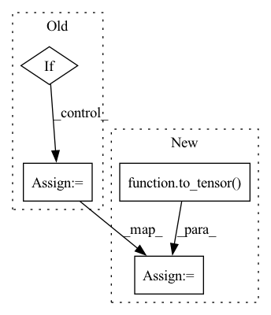

Pattern ID :22133

Before Change
y_a, y_b = y, y[index]
pred=model(to_tensor(mixed_x,requires_grad=True))
if get_backend()=="pytorch":
this_loss = lam * self.loss_criterion(pred, y_a.long()) + (1 - lam) * self.loss_criterion(pred, y_b.long())
elif get_backend()=="tensorflow":
this_loss = lam * self.loss_criterion(pred, y_a) + (1 - lam) * self.loss_criterion(pred,y_b)
if "mixup_loss" not in training_context["losses"]:
After Change
x1 = tf.gather(x, index)
y1 = tf.gather(y, index)
mixed_x = lam * x + (1 - lam) * x1
pred = model(to_tensor(mixed_x, requires_grad=True))
y_a, y_b = y, y1
this_loss = lam * self.loss_criterion(pred, y_a) + (1 - lam) * self.loss_criterion(pred,y_b)
if training_context["current_batch"]==0:
for item in mixed_x:
In pattern: SUPERPATTERN
Frequency: 4
Non-data size: 4
Instances
Fragment ID: 70099759
Project Name: allanyiin/trident
Commit Name: 17aaa8a3e211962b6b025bde62941b36ff2211d0
Time: 2020-05-20
Author: allan@asiaminer.com.tw
File Name: trident/callbacks/regularization_callbacks.py
M Class Name: MixupCallback
N Class Name: MixupCallback
M Method Name: on_loss_calculation_end(2)
N Method Name: on_loss_calculation_end(2)
M Parent Class: RegularizationCallbacksBase
N Parent Class: RegularizationCallbacksBase
M File Name: trident/callbacks/regularization_callbacks.py
N File Name: trident/callbacks/regularization_callbacks.py
M Start Line: 55
M End Line: 90
N Start Line: 56
N End Line: 89
'>
Before Change
x[:, :, bbx1:bbx2, bby1:bby2] = x[index, :, bbx1:bbx2, bby1:bby2]
// adjust lambda to exactly match pixel ratio
lam = 1 - ((bbx2 - bbx1) * (bby2 - bby1) / (x.shape[3] * x.shape[2]))
if get_backend() == "tensoflow":
bbx1, bby1, bbx2, bby2 = self.rand_bbox(x.shape[2], x.shape[1], lam)
x[:, bbx1:bbx2, bby1:bby2, :] = x[index, bbx1:bbx2, bby1:bby2,:]
// adjust lambda to exactly match pixel ratio
lam = 1 - ((bbx2 - bbx1) * (bby2 - bby1) / (x.shape[2] * x.shape[1]))
if training_context["current_batch"] == 0:
After Change
bbx1, bby1, bbx2, bby2 = self.rand_bbox(x.shape[2], x.shape[1], lam)
filter=np.zeros(int_shape(x))
filter[:, bbx1:bbx2, bby1:bby2, :] =1
filter=to_tensor(x)
x=x*(1-filter)+x1*filter
//x[:, bbx1:bbx2, bby1:bby2, :] = x1[:, bbx1:bbx2, bby1:bby2,:]
// adjust lambda to exactly match pixel ratio
lam = 1 - ((bbx2 - bbx1) * (bby2 - bby1) / (x.shape[2] * x.shape[1]))
loss1=self.loss_criterion(pred, y_a)
loss2=self.loss_criterion(pred, y_b)
this_loss = lam *loss1 + (1 - lam) * loss2
'>
Fragment ID: 70099754
Project Name: allanyiin/trident
Commit Name: 17aaa8a3e211962b6b025bde62941b36ff2211d0
Time: 2020-05-20
Author: allan@asiaminer.com.tw
File Name: trident/callbacks/regularization_callbacks.py
M Class Name: CutMixCallback
N Class Name: CutMixCallback
M Method Name: on_loss_calculation_end(2)
N Method Name: on_loss_calculation_end(2)
M Parent Class: RegularizationCallbacksBase
N Parent Class: RegularizationCallbacksBase
M File Name: trident/callbacks/regularization_callbacks.py
N File Name: trident/callbacks/regularization_callbacks.py
M Start Line: 146
M End Line: 189
N Start Line: 151
N End Line: 193
'>
Before Change
**kwargs
)
self.std_weight = self.kwargs["std_weight"]
if not torch.is_tensor(self.kwargs["mu"]):
self.mu = torch.tensor(self.kwargs["mu"], dtype=torch.float32, device=self.device)
else:
self.mu = self.kwargs["mu"]
if self.mu.device != self._device:
self.mu = self.mu.to(self._device)
if self.mu.dtype != torch.float32:
After Change
**kwargs
)
self.std_weight = self.kwargs["std_weight"]
self.mu = to_tensor(self.kwargs["mu"]).to(self.device)
self.mean_mu = self.kwargs["mean_mu"]
self.std_mu = self.kwargs["std_mu"]
self.learn_mu = self.kwargs["learn_mu"]
'>
Fragment ID: 70099750
Project Name: neurotorch/neurotorch
Commit Name: 31437ad14fc1202da4089bd81199370020f0e1c0
Time: 2022-08-04
Author: 93488840+AnthoDrouin@users.noreply.github.com
File Name: src/neurotorch/modules/layers.py
M Class Name: WilsonCowanLayer
N Class Name: WilsonCowanLayer
M Method Name: __init__(6)
N Method Name: __init__(6)
M Parent Class: BaseNeuronsLayer
N Parent Class: BaseNeuronsLayer
M File Name: src/neurotorch/modules/layers.py
N File Name: src/neurotorch/modules/layers.py
M Start Line: 850
M End Line: 862
N Start Line: 850
N End Line: 853
'>
Before Change
self.std_mu = self.kwargs["std_mu"]
self.tau = self.kwargs["tau"]
self.learn_mu = self.kwargs["learn_mu"]
if not torch.is_tensor(self.kwargs["r"]):
self.r = torch.tensor(self.kwargs["r"], dtype=torch.float32, device=self._device)
else:
self.r = self.kwargs["r"]
if self.r.device != self._device:
self.r = self.r.to(self._device)
if self.r.dtype != torch.float32:
After Change
self.tau = to_tensor(self.kwargs["tau"]).to(self.device)
self.learn_tau = self.kwargs["tau"]
self.learn_mu = self.kwargs["learn_mu"]
self.r_sqrt = torch.sqrt(to_tensor(self.kwargs["r"], dtype=torch.float32)).to(self.device)
self.mean_r = self.kwargs["mean_r"]
self.std_r = self.kwargs["std_r"]
self.learn_r = self.kwargs["learn_r"]
'>
Fragment ID: 70099744
Project Name: neurotorch/neurotorch
Commit Name: f1f3042b8458e0aa5101b1a28668a53850ee5df2
Time: 2022-08-04
Author: 93488840+AnthoDrouin@users.noreply.github.com
File Name: src/neurotorch/modules/layers.py
M Class Name: WilsonCowanLayer
N Class Name: WilsonCowanLayer
M Method Name: __init__(6)
N Method Name: __init__(6)
M Parent Class: BaseNeuronsLayer
N Parent Class: BaseNeuronsLayer
M File Name: src/neurotorch/modules/layers.py
N File Name: src/neurotorch/modules/layers.py
M Start Line: 859
M End Line: 869
N Start Line: 860
N End Line: 863